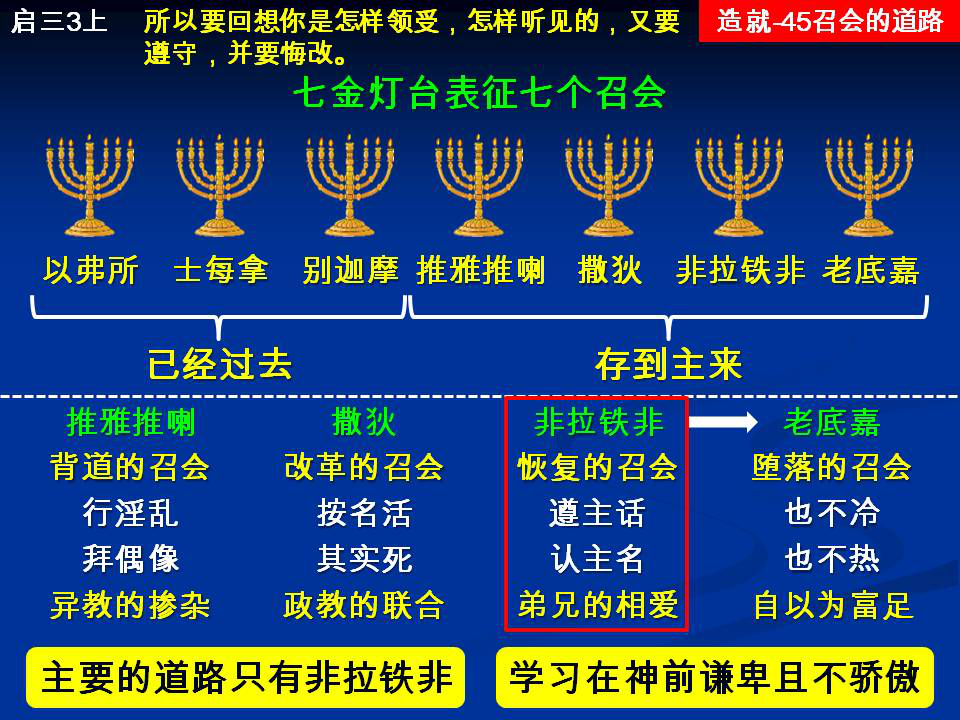

诗歌：647首、补512首
重要经文：
启示录二章25节：但你们已经有的，总要持守，直等到我来。
启示录三章3节：所以要回想你是怎样领受，怎样听见的，又要遵守，并要悔改。若不儆醒，我必临到你那里如同贼一样。我几时临到，你也绝不能知道。
启示录三章21节：得胜的，我要赐他在我宝座上与我同坐，就如我得了胜，在我父的宝座上与祂同坐一样。
纲目要点：
壹 召会道路的启示：
一 第一个召会－以弗所。
二 第二个召会－士每拿。
三 第三个召会－别迦摩。
四 第四个召会－推雅推喇。
五 第五个召会－撒狄：
1 按名是活的，其实是死的。
2 宗教的改教与政治的改教、国立教会的产生。
六 第六个召会－『非拉铁非』的意思是弟兄相爱。
七 第七个召会－老底嘉：
1 老底嘉是非拉铁非堕落而成的。
2 不冷不热而有属灵的骄傲。
贰 主的道路只有一个－为自己挑选召会的道路：
一 主的道路只有一个，就是非拉铁非。
二 要学习在神面前谦卑，一直活在神面前。
信息选读：
召会道路的启示
在启示录二至三章里有七个召会。这七个召会，都是当约翰写启示录时，在小亚细亚的七个召会。那时在小亚细亚有很多的召会，但是神从小亚细亚这么多的召会当中，特别拣选出这七个召会来。神的目的，乃是要将这七个召会拿来作预言的召会。因为一章三节告诉我们说，这一本书是预言。所以神就拣选这七个召会，预言说，召会的道路在地上到底是怎样的。我们为什么要特意读启示录二、三章呢？这有很大、很深的缘故。因为神在这两章里给我们看见，召会在二千年来到底要经历什么；也给我们看见，什么种的召会是祂所定罪的，什么种的召会是祂所喜欢的。所以，我们非明白启示录二、三章不可。只有当我们明白启示录二、三章之后，我们才知道到底召会的道路要如何；才知道我们该在什么种的召会里，作什么种的人，才能讨主的喜悦。启示录二、三章是说到召会的道路，注意的说到召会的事要怎么作才能讨主喜欢。
末了的四个召会要存在到主再来
启示录二、三章的七个召会，头三个和末了四个分作两组。头三个已经过去了；末了四个，今天都存在，一直等到主耶稣再来。所以，对于推雅推喇有这样的预言说，『直等到我来。』二章二十五节：『但你们已经有的，总要持守，直等到我来。』所以推雅推喇的召会要继续到主来。撒狄的召会也要继续到主来。三章三节：『所以要回想你是怎样领受，怎样听见的，又要遵守，并要悔改。若不儆醒，我必临到你那里如同贼一样。我几时临到，你也绝不能知道。』这就告诉我们说，撒狄的召会，要继续到主耶稣再来。非拉铁非的召会，也要继续到主耶稣再来。因为三章十一节说，『我必快来，你要持守你所有的，免得有人夺去你的冠冕。』老底嘉的召会是末了的一个召会，是召会在地上的末了一个。三章二十一节：『得胜的，我要赐他在我宝座上与我同坐，就如我得了胜，在我父的宝座上与祂同坐一样。』你看见说，这一个召会自然是末了的一个召会，继续到主耶稣再来。头三个召会没有主再来的应许，后四个召会有主再来的应许，定规是继续到主耶稣再来。
主对非拉铁非只有一个要求
『非拉』的意思是爱，『铁非』的意思是弟兄，『非拉铁非』的意思是弟兄相爱。在七个召会里，只有这一个召会，主没有责备；罗马教受责备，更正教受责备，非拉铁非没有受责备。在非拉铁非里只有称赞，没有责备。非拉铁非有两个特点：一个就是他们遵守主的命令，一个就是他们不弃绝主的名。这里有一班的人，被神带到一个地步，学习遵守主的话，遵守主的道。好些弟兄问过我，就是：『非拉铁非的得胜者，到底得胜了什么东西？』你们看见这里的难处么？以弗所的得胜者，自然是胜过离弃起初的爱。士每拿的得胜者，自然是胜过外面死亡的恐吓。别迦摩的得胜者，自然是胜过世界的捆绑和引诱。推雅推喇的得胜者，自然是胜过那女人的教训。撒狄的得胜者，是胜过按名是活的，其实是死的－属灵的死亡。老底嘉的得胜者，是胜过不冷不热的光景，和虚谎的骄傲。但是非拉铁非的这些得胜者，是胜过什么东西？主在全封的书信里，给我们看见，他们所作的一切都是主所悦纳的。在这七封书信里，只有这一封书信是完全蒙悦纳的。主如果完全悦纳了，还要得胜什么呢？都悦纳了，是最好的了。非拉铁非是合乎主心意的召会。但是，在非拉铁非的召会里，主也有得胜者的应许，但是要胜过什么呢？我说，没有什么事要特别得胜的，因为那一个召会没有任何的难处。但是，主在这里也有警告。十一节：『我必快来，你要持守你所有的，免得人夺去你的冠冕！』全封书信，只有这一个地方，是一个警告。这里是叫非拉铁非的人注意，要持守他们所有的。换一句话说，你所有的都行，可是不要丢掉。不要到一个时候，以为作惯了，就把它改一改。不要到一个时候，以为作了这么多年了，就把它换一换。要持守你所有的，不要丢掉！这是非拉铁非惟一的警告。主对非拉铁非只有一个要求，就是要持守你所有的。
要学习在神面前谦卑
弟兄姊妹要记得，你们如果要继续在非拉铁非的道路上，你们就得学习在神面前谦卑。有的时候，我听见有的弟兄说，『神的祝福在我们中间。』我承认这话，但是说这话的时候，特别要小心。一不小心，你就觉得说，那一个是老底嘉的味道。我们是富足，我们已经发了财，我们一样都不缺。我告诉你们，如果有一天你站在那一个地位上，你是很近老底嘉了！要记得，我们没有一样不是领受来的。四围的人可以充满了死亡，但是这并不需要你知道你自己是充满了生命。四围的人都可以贫穷，但是用不着你知道你是财主。活在主面前的人，不觉得自己是富足的。愿神怜悯我们，叫我们学习活在主的面前，可以富足，但是又不知道自己是富足的。摩西脸上发光，自己却不知道，这是更好的事！一知道，就变作老底嘉。一知道，结果就是也不冷，也不热。老底嘉，就是说起来样样都知道，事实上没有一样是热切的。说起来，样样都有，但是没有一样是能够把命拼上的。
主的道路只有一个
当人在神面前起首骄傲，离开生命，不重实际，只记得已往的历史，看见自己的富足，在这一种人的里头就是大众的意见，只能大家商量事情。这好像是民主，但是不能有身体的关系。你如果不认识身体的捆绑，不认识身体的权柄，不认识身体的生命，就也不能认识弟兄相爱。主的道路只有一个，就是非拉铁非。要走在这一条道路上！但是要小心，不要骄傲。一走非拉铁非的路，最大的试探是骄傲。『我比你好，我的真理比你清楚，比你懂得多！我们只有主的名字，和你们不一样！』一骄傲，马上就落到老底嘉去。跟从主的人，没有骄傲。骄傲的人，就被主吐出去。求主怜悯！我警告你们，要不说骄傲的话！人要不说骄傲的话，只有一直活在神面前。也只有一直活在神面前的，才不会看见自己富足，才能不骄傲！ （摘自初信造就第四十五篇）
课程复习：
一 我们要认识召会道路的启示，需要认真读哪两章圣经？
二 启示录二、三章的七个召会， 如何分作两组？
三 请说明末了的四个召会要如何存在到主的再来？
四 请说明主对非拉铁非召会的要求是什么？
五 主的道路只有一个，其中最大的试探是什么？
辅助图表：
